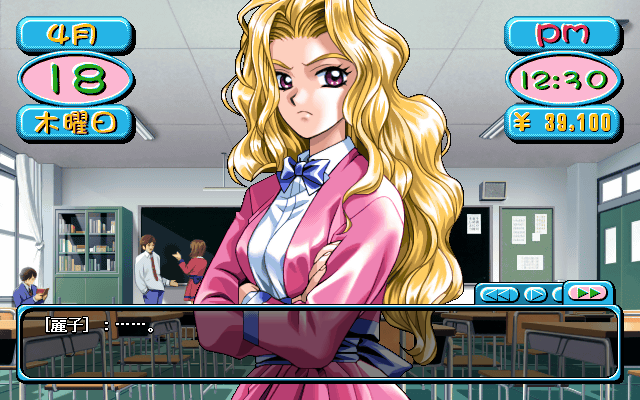

Landing my first date
Sunday:Last time I left off at 8:00 on a Sunday night. Although that would be the time I'd have to be home by on a Saturday, I still have 3 hours to explore the town today. Well, not quite 3 hours. It took me 45 minutes to go from the entrance of the dorm to my room and then back outside. I decide to go check out Reiko's house. After talking to the butler..
| Reiko: | "It's a shame, we're not hiring any gardeners or butlers right now." |
| hobo: | "We're in the same class, can't I come here to talk to you?" |
| Reiko: | "Honestly, I'd like if you forgot I live here." |
| CHOICE: | Chat. |
| hobo: | "You're the most arrogant and stuck up person I know." |
| Reiko: | "Hmmm? Is someone of your status really fit to judge me?" |
| CHOICE: |
◯ Say "I guess I really can't." ◯ Say "Saying things like that just proves my point." ● Say "It's not just me, everyone says the same thing." |
| hobo: | "It's not just me, everyone says the same thing." |
| Reiko: | "......" |
| hobo: | "......" |
| Reiko: | "I hate people who say things like that.. Being so insecure in their own opinions that they bring up others." |
| hobo: | "......" |
| Reiko: | "You might see me as arrogant, but using others to attack me is beyond cowardly." |
| hobo: | (Shit.. She's calling me a coward.) |
| Reiko: | "I talked with you like you wanted.. You can go home now." |
| hobo: | "......" |
Ouch. I spent the rest of the night looking for something to do but couldn't find anything. That night I had a dream.
| ＊: | "Papa didn't let you come did he." |
| hobo: | "Yeah.." |
| ＊: | "I think he thinks marrying you would be a mistake." |
| hobo: | "You shouldn't worry about those things." |
| ＊: | "Well.. I've seen how easily you make friends with other girls." |
| hobo: | "T-they're just ordinary friends.. Nothing more." |
| ＊: | "Hey.. Why aren't you looking at me?" |
| hobo: | "......" |
| ＊: | "Perhaps, you really are interested in other girls?" |
| hobo: | "......" |
| ＊: | "......" |
| hobo: | "I'll always love you.. Isn't that enough?" |
| ＊: | "You're cruel.." |
| hobo: | "......" |
| hobo: | "" |
| hobo: | "What a strange dream." |
| hobo: | "......" |
| hobo: | "'Why aren't you looking at me..'" |
| hobo: | "I can't remember that girl's face at all, but I remember exactly what she said." |
| hobo: | "......" |
| hobo: | "I have to get ready for school now." |
| Shizuka: | "Hey, hobo." |
| hobo: | (Hmm.. Shizuka Sensei's here.) |
| Shizuka: | "You're friends with Shinji right?" |
| hobo: | "Well I wouldn't really say we're friends, why are you asking?" |
| Shizuka: | "I was talking with him about what he wants to do after he graduates, and he was saying he was a big fan of yours." |
| hobo: | "H-huh?" |
| Shizuka: | "Hobo.. Shinji is really naive." |
| hobo: | (That gave me goosebumps.) |
| Shizuka: | "I think he might be more sensitive than most girls.. So try to be nice to him." |
| hobo: | "......" |
| hobo: | "W-what do I do.. I have to be nice to him?" |
| hobo: | "......" |
| hobo: | "Heh.. Maybe I'll start teasing him." |
| Girl: | "......" |
| hobo: | "Huh?" |
| Girl: | "Hey, do you play any sports?" |
| hobo: | "I fight." |
| Girl: | "......" |
| hobo: | "......" |
| Girl: | "Your body is nice.. But your character is bad." |
| hobo: | "......" |
| hobo: | "Tch, strange girl." |
| Minoru: | "Hehehe.. hobo." |
| hobo: | "What's up." |
| Minoru: | "She better stop." |
| hobo: | "Huh?" |
| Minoru: | "Don't play dumb, you were hitting on her." |
| hobo: | "Don't be silly, that girl came up to me on her own." |
| Minoru: | "'That girl', wait.. You don't know Ryouko's name?" |
| hobo: | "Why would I.. We're not in the same class." |
| Minoru: | "You are. Have you been paying any attention?" |
| hobo: | "Eh? Really?" |
| Minoru: | "Hmm.. You're really not interested in girls." |
| hobo: | "Nope, not at all." |
| Minoru: | "You're cold, even if you're not interested you should still know her name." |
| hobo: | "......" |
| hobo: | "Mind your own business." |
Later that day..
| Minoru: | "Hehehe.. They were white." |
| hobo: | "Huh?" |
| Minoru: | "I happened to see Mizuho in front of the flower shop.. Her panties were showing." |
| hobo: | (So he was one of the passerby?!) |
| Minoru: | "Mizuho's white underwear showing.. The way her pure white underwear made me feel.. I felt like I had to thank God for blessing me with that moment." |
| hobo: | "How can you say that with a straight face?" |
| Minoru: | "......" |
| hobo: | "......" |
| Minoru: | "I get it.. You're just mad I didn't say hi to you. I was just passing by, I had other things to do." |
| hobo: | "......" |
| hobo: | "Why did he think I was mad at him? Because I said what he was saying was embarrassing?" |
The next day Minoru has more to tell us.
| Minoru: | "Hey.. hobo." |
| hobo: | "Whats wrong this time?" |
| Minoru: | "What do you think defines an adult woman's sex appeal?" |
| hobo: | "Huh?" |
| Minoru: | "Have you ever seen Shizuka Sensei when she goes on the roof? Her languid expression as she stands there alone. The wind blowing in her hair as she looks out at the whole town.." |
| hobo: | "Whoa there, are you trying to become a poet? You're making me all teary eyed." |
| Minoru: | "That's fine isn't it? What I wanted to say was seeing her like that was strangely erotic. It's not something the girls in our class could do." |
| hobo: | "Maybe it was her perfume?" |
| Minoru: | "I was looking at her from far away, the smell couldn't reach me." |
| hobo: | "Then, was it the way her clothes show off her tits?" |
| Minoru: | "I was looking at her from behind." |
| hobo: | "Umm.. Then was it because you masturbated to her last night?" |
| Minoru: | "......" |
| hobo: | "......" |
| Minoru: | "Look, it was just weird alright." |
| hobo: | "......" |
| hobo: | "I guess I'll go buy lunch now." |

| Mayumi: | "Waah!!" |
| hobo: | "Hya!?" |
| Mayumi: | "Ahaha, guess who!!" |
| hobo: | "H-hey, quit it!" |
| Mayumi: | "Until you guess who I am, I'm not letting go!" |
| hobo: | (Theres a faint smell of perfume.) |
| Mayumi: | "Hmm? Do you really not know?" |
| Mayumi: | "That's no good, did you forget me?" |
| hobo: | (Calm down, you're lecturing me like we're close.) |
| Mayumi: | "You're a man, so the first time you meet a girl you shouldn't forget her her name, face, and voice. When I meet a boy, I never forget his name, face, voice, and body." |
| hobo: | "Huh!?" |
| Mayumi: | "Ahaha, you're so innocent.. Your cheeks are getting red!" |
| hobo: | (W-what's she saying.. This woman.) |
| Mayumi: | "When I was covering your eyes, I noticed how soft and warm your cheeks are." |
| hobo: | "Hey! Don't you think you're acting a little over-familiar." |
| Mayumi: | "So?" |
| hobo: | "So, are you thinking at all?" |
| Mayumi: | "No, that's pretty normal though." |
| hobo: | "Most girls would be thinking about guy's bodies." |
| Mayumi: | "Ahaha.. Come eat lunch with me." |
| hobo: | "Eh?" |
| Mayumi: | "I'll be waiting on the roof." |
| hobo: | "......" |
| hobo: | "She didn't even wait for me to reply." |
There was no indication given to whether or not I actually went and ate lunch with her.
Thursday:

| Reiko: | "......" |
| hobo: | "What is it." |
| Reiko: | "I don't want to be asking you for help.." |
| hobo: | "What?" |
| Reiko: | "I really need a 《Brand Name Scarf》.. Of course I won't tell you why." |
| hobo: | "Why should I care?" |
| Reiko: | "So blunt.. Look, if you had one it would be a big help." |
| hobo: | (Hmm, what should I do?) |
Events like this are completely unpredictable. The time the girl asks and the item they ask for are completely random. You start out with a reasonably large collection of items, and you can buy more at different stores. Notice that the extremely rich girl is asking me for a 10,000 yen scarf.
| hobo: | "Tch, I might as well give you mine." |
| Reiko: | "You should feel honored I let you help me." |
| hobo: | (What's she saying?) |
Its finally Saturday. The first thing I'm going to do is go right back into the classroom.
| Ryouko: | "Ah.." |
| hobo: | (Hmm, she came up here to talk to me.) |
| Ryouko: | "Stature, physique, and most importantly your aura don't have any flaws." |
| hobo: | "Huh?" |
| Ryouko: | "You said the sport you're best at is fighting right?" |
| hobo: | (She remembered that?) |
| Ryouko: | "If your body is full of injuries, it would be a shame but.. Your rank would go down." |
| hobo: | "What do you mean by rank?" |
| Ryouko: | "So, is your body covered in wounds?" |
| hobo: | "Hey, why'd you ignore my question?" |
| Ryouko: | "......" |
| hobo: | "......" |
| Ryouko: | "I want to hear the answer.. Goodbye." |
| hobo: | "......" |
| hobo: | "Ryouko is something else." |
And then I go back in the classroom again
| Mayumi: | "Boo!!" |
| hobo: | "Gya!?" |
| Mayumi: | "Ahaha, scared ya didn't I." |
| hobo: | "A-are you kidding me?" |
| CHOICE: | Ask where she lives. |
| hobo: | "Hey, would you tell me your address?" |
| Mayumi: | "Sure, I live near your dorm." |
| hobo: | "Really?" |
| Mayumi: | "I also live near Minoru and Mizuho's houses." |
| hobo: | "So.. 4th street?" |
| Mayumi: | "Yes, 4th street number 28." |
| hobo: | "Hmm, we're basically neighbors." |
I already knew where she lived but this time I won't surprise her when I visit.
| CHOICE: | Ask her phone number. |
| hobo: | "Hey, would you tell me your phone number?" |
| Mayumi: | "Sure, that's fine.. Are you sure you'll remember?" |
| hobo: | "Of course." |
| Mayumi: | "Alright, my home phone number is ♂∞★◆－▼◇□◎." |
| hobo: | "OK.. ♂∞★◆－▼◇□◎." |
| Mayumi: | "You can call me whenever." |
| hobo: | "Alright, I'll call you later." |
| CHOICE: | Chat. |
| hobo: | "There's something about your personality.." |
| Mayumi: | "Ahaha.. What do you think it is?" |
| CHOICE: |
◯ Say "I think you do what you want without considering anyone else." ◯ Say "I think you're not good at speaking, but you make up for it with your explosive personality." ● Say "I think you're graceful and gentle." |
| hobo: | "I think you're graceful and tender." |
| Mayumi: | "Ahahaha.. Who are you talking about?" |
| hobo: | "You." |
| Mayumi: | "If I'm graceful, then what's Mizuho?" |
| hobo: | "Well.. She's.." |
| Mayumi: | "This conversation is getting boring. I'll talk to you later." |
| hobo: | "......" |
| hobo: | "What did I do?" |
There was nothing left to do inside of the school so I went to the courtyard.
| hobo: | "Hmm, the track team is practicing as usual." |
| hobo: | "......" |
| hobo: | "They look cute from behind, but there's something wrong with nearly all of their faces.. I'm going to check out the tennis team's practice." |
| Girl: | "Hey, who's face has something wrong with it?" |
| hobo: | (Ugh, she heard me.) |
| Girl: | "Ugh, Senpai." |
| hobo: | (She's cute isn't she.. Is she on the track team?) |
| Girl: | "This sucks, why did it have to be you?" |
| hobo: | "Hey, are you on the track team?" |
| Girl: | "Can't you tell by looking?" |
| hobo: | "What grade and class are you in?" |
| Girl: | "A-about that.." |
| hobo: | "Hey, how do you know about me?" |
| Girl: | "More importantly, what are you doing squatting here?" |
| hobo: | "Hahaha.. That's a secret." |
| Girl: | "W-well, I'm busy with practice.. You're annoying me." |
| hobo: | "......" |
| hobo: | "Shit, she ran away." |
| hobo: | "She's a feisty girl.. Is she a senior?" |
| hobo: | "......" |
| hobo: | "No.. She called me Senpai didn't she." |
Now I'm going to leave the school.
| hobo: | (Ah......) |
| hobo: | (......) |
| hobo: | (Is she looking at me?) |
| hobo: | (......) |
| hobo: | (Hmm.. She disappeared.) |
| hobo: | "......" |
| hobo: | "What the hell.. Who was that?" |
Now I'll head to the flower shop. Hopefully I'll be able to make some progress.
| Girl: | "Ah.. Welcome." |
| hobo: | (Nice, I think she smiled a bit when she saw my face.) |
| CHOICE: | Chat. |
| hobo: | "Hey, do you live in Uzuki City?" |
| Girl: | "What?" |
| hobo: | "I live really close to here. It's about a 15 minute walk." |
| Girl: | "I have to go, my boss is calling for me." |
| hobo: | "......" |
| hobo: | "I'd wait for her, but I don't think she's going to come back out." |
I go next door to the Dogeza and look at who I find.
| hobo: | (Geh.. It's Haruhiko.) |
| Haruhiko: | "Hmm, are you coming here to labor away?" |
| hobo: | "Eh? You came to a coffee shop.. I thought you only drank from your mother's breasts." |
| Haruhiko: | "Shut up, I'm not interested in women older than 30. If I wanted to suck on breasts though, I have 20 young maids I can choose from." |
| hobo: | (S-shit.. He has his own harem.) |
| Haruhiko: | "Are you jealous?" |
| hobo: | "......" |
| Haruhiko: | "Fufufu.. You couldn't even choose your mom if you wanted, I almost feel sorry for you." |
| hobo: | "......" |
| hobo: | "What.. How does he know about my parents?" |
Now I head to Miko's house.
| hobo: | "......" |
| Miko: | "Ah......" |
| hobo: | "I wanted to talk to you so I came here." |
| Miko: | "My father will get mad, so keep it quick." |
| hobo: | "Alright, I get it." |
| CHOICE: | Chat. |
| hobo: | "Hey, are you going to inherit this shrine?" |
| Miko: | "Women can't become Shinto priests." |
| hobo: | "Ah.." |
| Miko: | "Maybe whoever I marry will take over, I think my father would like that." |
| hobo: | "Hmm.. Is that so?" |
| CHOICE: |
◯ Say "Husband and wife as priest and shrine maiden, that's a nice combination." ● Praise her for thinking about her future. ◯ Ask her if there's anything else she wants to become in the future. |
| hobo: | "It's good that you're thinking about your future." |
| Miko: | "I'm not really thinking about it, it's been decided since I was born. It'd be different if I had a brother though.." |
| hobo: | (Is that so? Because she was born there, her future has been decided.) |
| Miko: | "My father is going to get mad, I'm going back to my room." |
| hobo: | "Alright.. I understand." |
| hobo: | "......" |
| hobo: | "Just like that she went back inside." |
Now I'm checking out the love hotel.
| hobo: | "Here on the outskirts of the business district is the love hotel 《RabuRabu》. It's ￥20,000 a night." |
| hobo: | "This love hotel was built in my junior year. Me and Minoru came here and tried to peek in through the windows." |
| hobo: | "......" |
| hobo: | "Minoru ended up falling out of a tree.. He ended up spending a whole week in the hospital." |
| hobo: | "......" |
Nothing left to do outside tonight. Time to make some phone calls. First up.. Mizuho! I didn't talk to her at all this past week, so I'm not going to try asking her out this time. I'm going to skip the intro because its the same as last time.
| hobo: | "Do you remember last Spring, when we all went to watch the cherry blossoms?" |
| Mizuho: | "That time when Minoru got really drunk and climbed a cherry tree?" |
| hobo: | "Hahaha, Miko was up there too." |
| Mizuho: | "Yeah, she went up after him." |
| hobo: | "And then all the boys gathered under the tree. Except Haruhiko, he just turned away." |
| Mizuho: | "That's because Miko was wearing such a short skirt." |
| hobo: | "Even then she went up there to try to help Minoru.. She's a really nice girl." |
| Mizuho: | "And the boys were taking advantage of her kindness. She caused them to gather underneath the tree like ants to a pile of sugar." |
| hobo: | (Hahaha.. I was the first one there, standing right underneath her.) |
| Mizuho: | "Were you looking at her underwear?" |
| hobo: | "Umm.." |
| CHOICE: |
◯ Say "I was trying to help Minoru, so I was too focused looking at him to notice." ● Say "To tell the truth I was." ◯ Say "I did the same as Haruhiko and looked away." |
| hobo: | "To tell you the truth I was." |
| Mizuho: | "That's right.. I remember seeing you look." |
Not really a good situation, but at least I didn't get caught lying.
| hobo: | "Is that so?" |
| Mizuho: | "You were standing right underneath Miko and intently staring straight up." |
| hobo: | "Maybe not 'intently' staring.." |
| Mizuho: | "It wasn't that bad, it was almost childlike." |
| hobo: | "Childlike?" |
| Mizuho: | "Yeah. Like a little kid." |
| hobo: | (Tch.. Treating me like a kid even though we're the same age. I guess she's not the first one to do it though.) |
| Mizuho: | "Sorry, I'm busy now." |
| *hangs up* | |
| hobo: | "......" |
| hobo: | "She didn't seem happy to talk to me.." |
Now let's try calling Mayumi. She seems much more receptive, so maybe I can land a date with her.
| hobo: | "I wonder if she'll be surprised when I call her." |
| *ring ring* | |
| hobo: | "......" |
| Mayumi: | "Hello, Tachibana household speaking." |
| hobo: | "It's me, hobo." |
| Mayumi: | "Ah.. What do you want to talk about?" |
| CHOICE: | Plan a date. |
| hobo: | "Hey Mayumi, do you wanna go on a date tomorrow?" |
| Mayumi: | "I don't mind.. I have free time so sure." |
| hobo: | "R-really?" |
| Mayumi: | "Don't act so surprised.. It's just a date." |
| hobo: | (Hmm, 'just a date' she says.) |
| Mayumi: | "Hey, where are we going?" |
| hobo: | (Umm.. Where do I choose?) |
Now comes the hard part.. Deciding where to go. There are a lot of choices, and I don't know anything about a lot of them. For now I'll pick somewhere I know how to get to.
| hobo: | "Hey, how about we go bowling at 《Happy Strike》." |
| Mayumi: | "That's alright with me." |
| hobo: | "Then.. Meet me in front of Happy Strike tomorrow." |
| Mayumi: | "Um, what time?" |
| hobo: | (Umm, when should I choose.) |
| CHOICE: | 9:00 AM. |
| hobo: | "Lets meet at 9:00 AM." |
| Mayumi: | "Alright." |
| hobo: | "See you tomorrow." |
| *hangs up* | |
| hobo: | "......" |
| hobo: | "That turned out well." |
I called Minoru but he didn't have anything interesting to say. It's a little early but I can't leave my room and I don't have anything else I can really do so I'll end it for now.